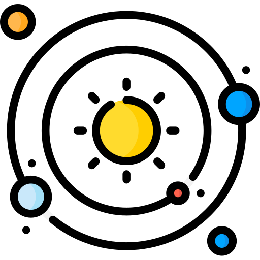

Task List API

This Flask project creates, displays, and updates your tasks and goals. When you finish a task, the external Slack API is called to post a message in Slack.
Solar System API
This Flask project creates, displays, and updates information about the planets and moons in our solar system.
Nobel Prizes Website
A website to filter all existing nobel prize winners and their achievements by year and award category.
Kolorful Kirby Website
A website to create and modify Kirby and its environment.